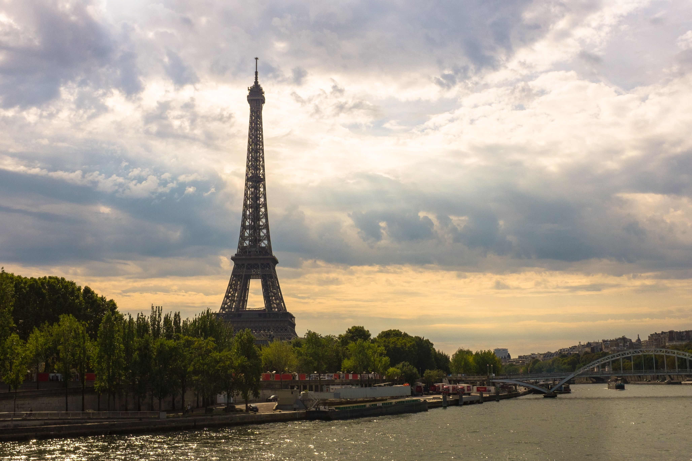
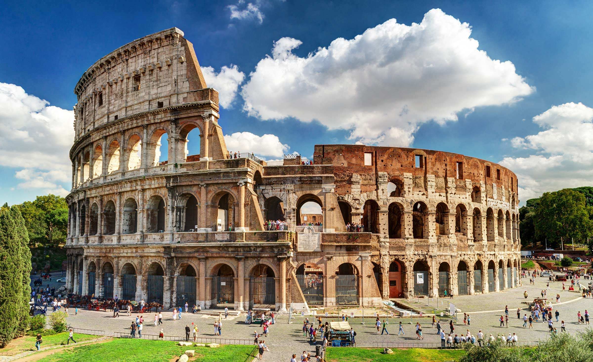
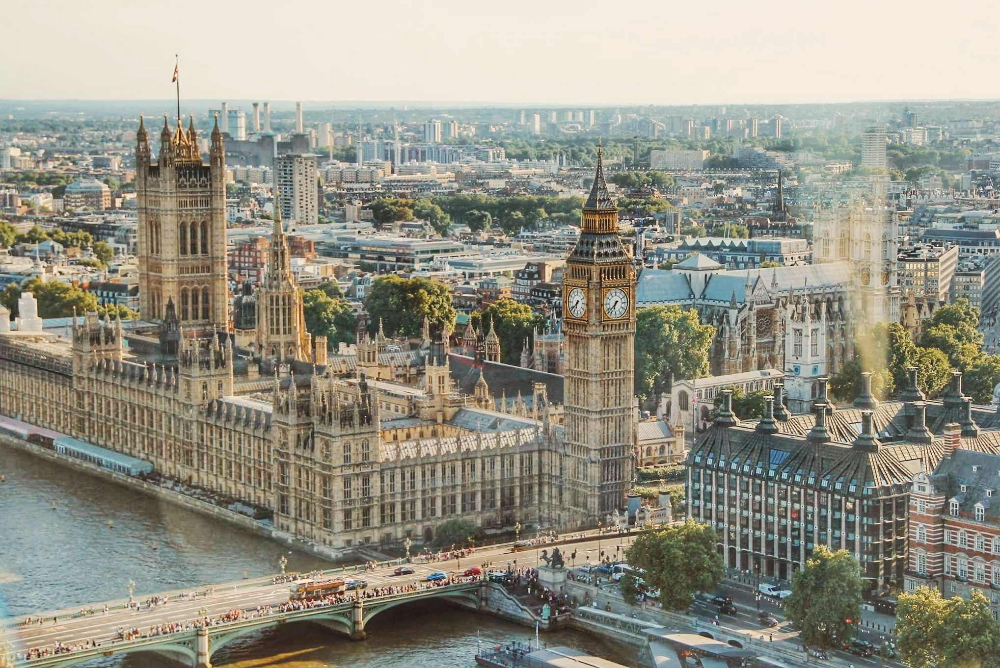
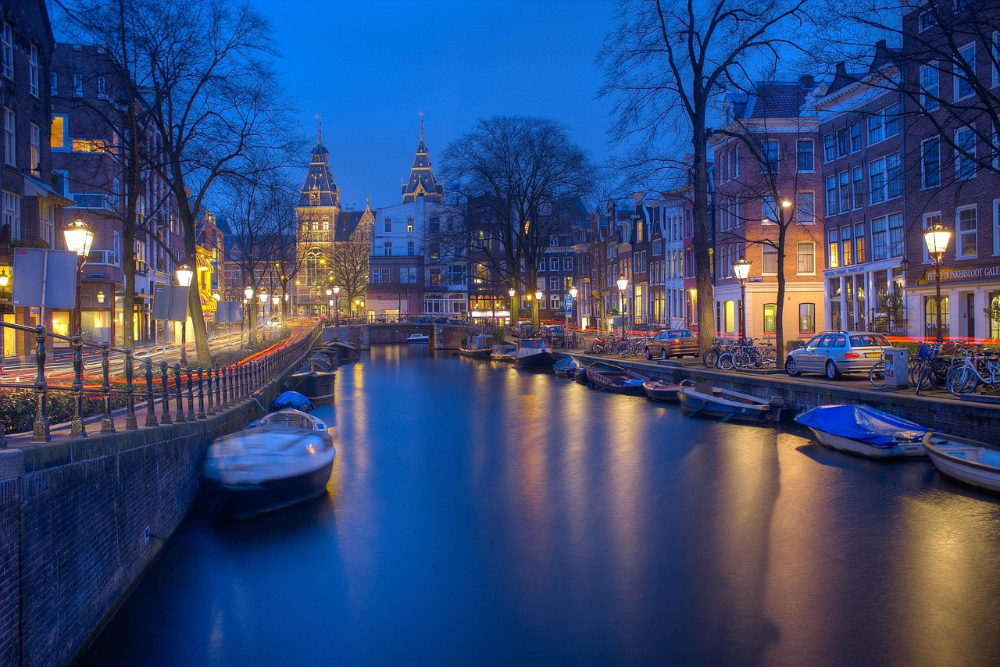
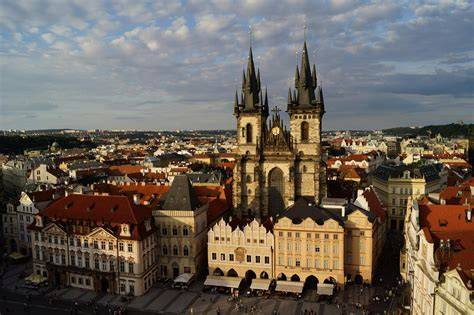
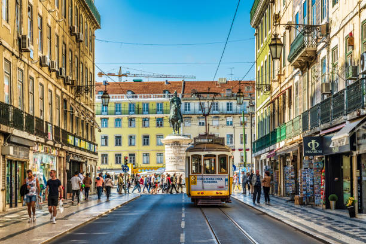
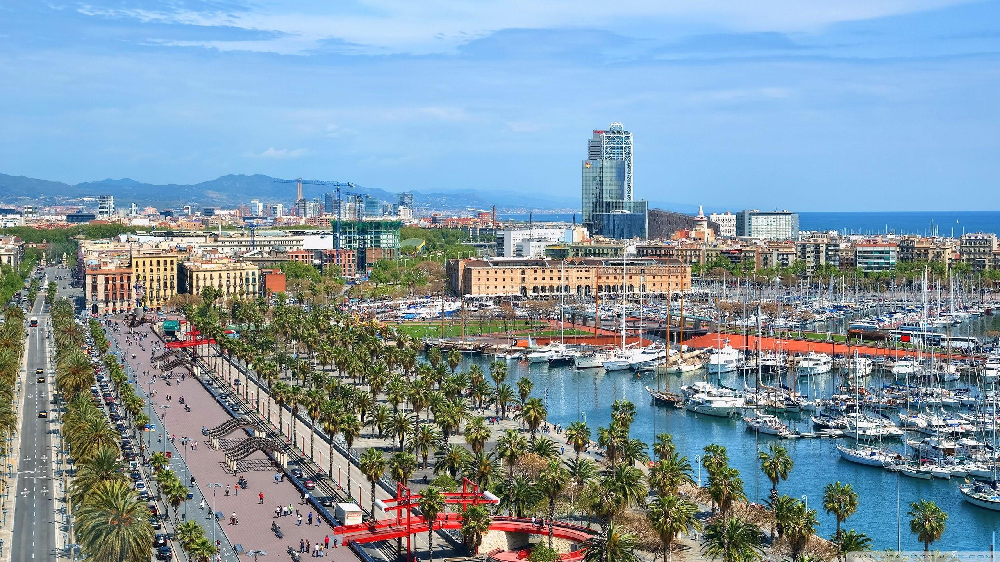
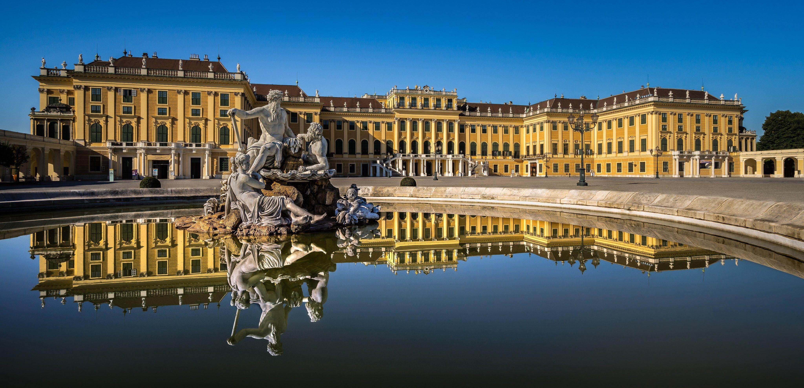

París
París es conocida por sus monumentos, sus museos y sus características calles.

Roma
Roma conserva monumentos y restos históricos pertenecientes a diferentes épocas.

Londres
Londres combina edificios históricos con espacios modernos y una gran diversidad cultural.

Ámsterdam
Sus canales, puentes y bicicletas forman una de las imágenes más conocidas de la ciudad.

Praga
Praga destaca por su arquitectura, sus plazas históricas y los puentes que cruzan el río Moldava.

Lisboa
Lisboa es conocida por sus colinas, sus tranvías y sus vistas sobre el río Tajo.

Barcelona
Barcelona ofrece arquitectura, espacios culturales y paisajes junto al mar Mediterráneo.

Viena
Viena destaca por sus palacios, su arquitectura histórica y su importante tradición cultural y musical.